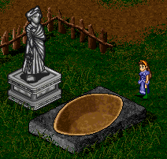
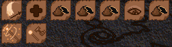
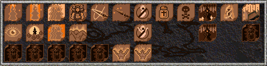
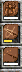
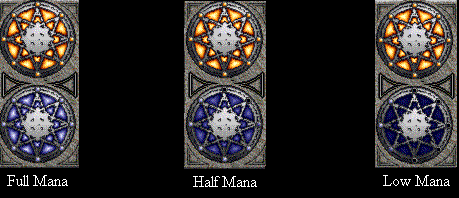

Priest Lore
by Chloe Ta'Null
Greetings, Aisling. The path of the priesthood is in many ways both the most social and the most spiritual of all the paths an Aisling can choose. It has its various branchings, but they all return to the main way : that of aid. What you aid, and how, is up to you. I have pieced together these documents from my own and other's observations ; I do not claim omniscience, by any means, nor are these the only ways one can become a powerful priest. These are only a starting point, a small light to guide your first steps.
I assume that you have already visited the temple of choosing, and sworn oath to Glioca, our patron goddess. Information on how to reach that point can be found in other manuals. My purpose here is rather to help you see around the many turnings of the path and so pick the way that will be smoothest and most interesting for your personal tastes. I will discuss general knowledge, skills and spells, hunting, and two appendices on things that will become part of your daily life : beothaich deum and religion.
I. Scouting the Path (General knowledge)
II. Learning the Path (Skills and Spells)
III. Walking the Path (Hunting techniques)
Appendix A : Beothaich Deum
Appendix B : Religion
Conclusion
Scouting the Path
Now that you are a priest, you should choose the proper attire. Until you have reached your eleventh insight, your clothing will build humility. Males have the modest Cowl,  which can be purchased from Brody in Mileth for a mere 800 coins. Females get the stylish Gorget Gown (affectionately known as "sackcloth".) This mainstay of Temuarian fashion can also be bought from Brody for the pittance of 800 coins.
which can be purchased from Brody in Mileth for a mere 800 coins. Females get the stylish Gorget Gown (affectionately known as "sackcloth".) This mainstay of Temuarian fashion can also be bought from Brody for the pittance of 800 coins.
Once you reach the all-important eleventh insight, new clothing will become available to you, including such status symbols as holy conicals and holy vermillions. The crucial thing to secure upon reaching the second circle is outerwear, however. Priestesses may purchase the revealing Mystic Gown from Jean in Loures for 8,800 gold, while priests may obtain the Galuchat coat from Huberto in Rucesion for 8,300 gold pieces. If these colors do not suit you, monks and rogues may tailor them to match a specific town's colors, or they can also try and improve them to give you even better protection. If you desire this be polite when asking, for they are doing you a favor.
Along the way you will have the possibility to begin wearing belts, necklaces, rings, and boots. Each item will have different properties, from elemental protection to additional intelligence to improving muscle tone. The most popular additions include coral earrings, which add greatly to a young Aisling's intelligence, leather belts which protect you from elemental attacks, and jade rings. Jade rings, although expensive (100,000 coins each) add greatly to your life span and spell-casting ability and are therefore considered worth the cost by many priests.
You will probably next be considering weaponry. Be very careful, for most weapons will severely hamper your power for casting spells, which is how you survive. Shields, gauntlets, greaves, and metal weaponry will all decrease your amount of available mana. The one full-proof, but largely useless weapon is the stick, which the smith will give you for free if you gather him some wood. Especially early in your journey, you may find it necessary to use the brutal, metal weapons but their effectiveness in combat will rapidly decrease as you gain experience, leaving you to rely on your priestly skills. Early in your second circle you may well decide to carry no weapon, but upon reaching the nineteenth insight will doubtless long for a holy hermes, which greatly increases your healing speed. Other staffs exist for the greater insights, but this will be your trusty aid for some time to come. Be wary, however, for upon your death Sgrios will claim this prize.
One very important thing for a priest is knowledge. Our spells and skills come from a wide variety of teachers, and it is therefore important to travel and see the world. Many of these teachers will reward you with experience for patiently listening to their tales. Their stories will be useful to you, for they will teach you how to understand what spells mean, the religious pantheon you will soon be interacting with, and other knowledge that will help you become a great, instead of a mediocre, priest. Certain Aislings also hold this knowledge, and will be glad to share it with you, but it is still wise to travel and seek it yourself for otherwise you may never discover certain secrets that mundanes are only willing to teach the adventurous.
I have one last general note before we continue. You will notice, upon exiting Riona's inn in Mileth, a rather large altar. This altar has been in existence longer then any mundane can remember, and it is rumored that Temuairan deities sometimes appear to those who devoutly share their earnings with the gods. Whenever you have been on a successful hunt, create red potions, or otherwise wish to show your thankfulness to the gods, quietly place an item of worth into the altar. Usually, anything the value of wine (500 coins) or more is considered appropriate. If you are faithful and share with the gods your fortune, they will occasionally do small favors for you, or even bless you with an item that carries their goodwill. Priests have a closer tie to the gods then any other class, and so are blessed. Be wary, however, of the pull of idolatry. Do not begin merely throwing anything into the altar, seeking greed, for the gods may punish you. Do things in good faith and as such they will be returned to you. *smiles*
Learning the Path
Priests have more spells then any other class, in addition to a wide variety of skills. Many of these spells build on one another, such as the greater and weaker heal spells. There are several decisions to make as you advance : what to specialize in, whether it be combat or healing, your preferred mode of casting, etc. I will endeavor to make these questions as painless as possible in this section of the guide. *smiles*
The first trick is to find the mundanes who will be willing to teach you the skills and spells you seek. These are scattered over 5 towns. Luckily, they are usually willing to tell you what you can learn in advance, so you can spare your legs. Be sure to take a quill and write down what they say, as you will want to remember what aspects of your personality ((stats)) you want to improve as you become more insightful.
The second step involves learning the spell or skill, which means even more walking. Once you find the appropriate mundane to teach the spell, there are two sets of requirements you must fulfill : that of having the mental capacity ((correct stats)) as well as the necessary tribute. The mundanes will tell you in advance what aspects of your personality you need to work on for each spell, but the ingredients remain a mystery until the last moment. Usually, they include raw wax, honey, and perhaps some wolf's fur or beothaich deum.
With regards to planning what aspects of your person you wish to increase for a certain spell or skill, there are some ways to speed the accumulation of spells. Every time you increase in insight (as we all know) you are allowed to improve two parts of your personality. There are also certain magical items, which usually cannot be worn until you enter the second circle, that can artificially increase certain aspects. For example, the coral earrings I mentioned above add to your intelligence ((by two points)) and if they are consecrated to Luathas, god of knowledge, they add even more ((an additional point.)) If you are, therefore, lacking only a few personality traits to achieve a certain spell or skill, see if you can find magical items that can assist you. Often, these items are dropped by powerful creatures, or Aislings may be willing to loan you some. Another warning, however : all magical items are claimed by Sgrios when you die, so be careful, or store them in the bank unless you wish to chance it (especially if it's someone else's!) *smiles*
Finally, you have the attributes, you have the tribute required, and you get the skill or spell! Now how do you cast it?
Much of the physical actions are covered in other manuals, but there are certain idiosyncrasies that can make beginning priests feel overwhelmed. ((This next section is OOC for clarity.)) Before casting a spell, right-click on its icon in your spell view. This will bring up a window where you can type a certain number of text lines, or "incantations," that appear above your head before the spell casts. Here is a chance to be creative and perhaps amuse your fellow hunters while waiting for the spell to cast. When you are ready to cast a spell or use a skill, simply double-click it. Skills, and a few "self" or fein spells will work automatically, but others require you to specify the target. To do so, move the mouse to the target until it is highlighted (like this : ) and click the left mouse button. By using macros (mentioned below) you can minimize mouse movement and therefore maximize your spell-casting speed. ((end of OOC section))
Secondly, priests have a large amount of spells, many of which require quick access during battle. I recommend storing the most crucial, such as ioc (heal) and armachd (harden armor) in your short-term memory ((use keyboard macros, as described in the MideProvince manual.)) You can only remember ten at a time, so plan carefully. Although to young priests ten seems to be more then enough, as your experience grows so will your needs. Be smart and plan well to fit both your combat habits and personal preferences. When hunting with a rogue who only uses traps, for instance, you may not need to increase his dexterity as he is not physically attacking. Concentrating on cursing and poisoning the monster, therefore, will be more helpful to your group, and you may therefore need to reshuffle your short-term memory ((keyboard macros)).
Skills
So what skills can a priest learn? Most of the skills involve helping you understand the attributes of an item, such as whether Sgrios will claim it when you die. I will only mention two explicitly, as their important virtues may not be immediately apparent : Look and Transfer Blood. Both of these skills can be learned by young priests. Look is very useful, as it will tell you where you are (obviously). While you may say "Of course I'll know where I am! What use is that?" when it comes time for you to describe to someone where you are in dire need of assistance, this skill will enable you to direct them much quicker then "The north end of the blue crypt." Transfer Blood is a skill that enables you to give a small amount of your life to another by standing facing them and using the skill. For younger priests, this skill is useful when you run out of the willpower to cast spells and just need a (very) brief time to rest. When used correctly it can save a hunting partner's life.
The picture below shows a mid-level priest's skills.

The following table lists where to find certain skills, but not the personality traits or tribute required. I can't do everything for you *smiles*
| |
Fae Priestess |
Dark Wizard |
Rogue |
|
Mileth |
Look
Transfer Blood |
|
Undine |
Perish Lore |
|
Suomi |
Herbal Lore |
Potion Lore
Wield Staff |
Food Lore |
|
Rucesion |
Mend Staff
Nis |
Spells
Priest spells fall into two general categories, those which are helpful to Aislings and those which are harmful to creatures. To look at it another way, some spells are protective and others destructive. Typically, priests have to be wise of both mind and heart, but there are a few exceptions, such as dexterity spells. You can also learn various lectures from mundanes which contain the knowledge they usually teach from their various shops ; these can be helpful when you are teaching new Aislings about our land. Also, when you join a religion you will be given spells to pray to your god of choice and hold mass.
Most priest spells build on each other. For example, to get ioc (heal) you must first show a decent understanding ((have it advanced to a certain level)) of beag ioc (little heal). The understanding your teachers require you to have is often not revealed until after you have the desired personality traits, which can be frustrating. Imagine working for a moon to get a spell, only to be told you need to practice more! To avoid this stress, make sure you have a decent grasp of the weaker spell before attempting to conquer the greater.
One frustration priests constantly must face is the failure rate of spells. Every spell fails occasionally, and when you have recently learned it, they will fail often. For young priests this is sometimes confusing and makes life rather difficult, as all your spells are new. The only exception to this rule are the healing (ioc) spells. These spells never fail, which is good as they are what you use to keep both yourself and your hunting party alive. Apparently priests, while gifted healers, have a hard time remembering the correct incantations for the other spells. *grin* When a spell fails, you will either feel "fascinated" or will see the spell be "deflected" when the creature has a high magic resistance. Techniques for knowing when to quit trying and concentrate on healing are discussed in the next section.
The picture below illustrates one mid-level priest's arrangement and choice of spells.

The following table details where to learn each spell. It does not say what the spell is, as that information can be gleaned by learning the language of Temuair as well as through talking to mundanes. It may not include every spell. Nor do I include what personality traits or tribute is required : again, I don't want to make your job too easy. *smiles* But this may be useful if you forget where you were supposed to go, or some such.
| |
Fae Priestess |
Dark Wizard |
|
Mileth |
Beag Ioc
Armachd Fein
Beag Ioc Fein
Armachd
Ao Beag Cradh
Beannaich
Dachaidh
Ao Puinsein
Fas Deireas
Beag Seun
Beag Ioc Comlha
Ioc
Ao Dall
Seun
Ao Cradh |
Breisleich
Beag Cradh |
|
Undine |
Puinneag Spiorad |
|
Suomi |
Ao Mor Cradh |
Cradh
Beag Puinsein
Mor Breisleich
Beag Pramh
Puinsein
Deo Saighead |
|
Piet |
Beothaich Deum
Beag Slan
Mor Beannaich
Ioc Comlha
Slan
Mor Seun
Beag Naomh Aite
Ao Suain |
Walking the Path
Well, here you are, all outfitted with the proper equipment and with a few spells under your belt. There are a few quirks about hunting as a priest that you should be aware of before charging off into the local goblin camp. Hunting as a priest is either the most interesting or the most stressful time you can have in Temuair, depending on your perspective. Priests must juggle several concerns, namely what spells to cast, remembering when and on who to cast them, and being keenly observant of your hunting party's as well as your own needs. Solo hunting as a priest is largely impossible or unbelievably inefficient, especially as you increase in your knowledge of the world. This section will therefore only cover group hunting.
Spell Choice
As I stated earlier, priests have two general types of spells : offensive and defensive. Offensive spells often fail and usually take longer to cast. Every moment you spend casting a spell, or waste when one fails, could have been spent protecting your group through either healing or various defensive spells such as armachd (which hardens one's clothing magically.) You must therefore learn how to strike a balance between the two types, and unfortunately I can offer no single rule, only guidelines.
- Keep your groups' defensive spells in a uniform timeline ; this will keep you from forgetting to protect someone. (More discussion of this is in the next section.)
- Don't wait until the creature is on top of your group to cast offensive spells ; try and cast them the moment the group forms an attack strategy.
- If the creature is at quarter-life, give up on offensive spells and concentrate on defense. The time you waste on them will not be worth your effort.
- If you have multiple priests in your group, talk to them and decide who will cast what. There is no reason everyone should heal the same person. Several things can be taken into consideration : each priest's skill at casting certain spells, what spells they know, and personal preference. This way you eliminate duplicate efforts.
Note : Everyone should heal *someone.* This is your primary job.
- When you are being attacked by multiple creatures, place the emphasis slightly more heavily on healing then attack. No matter how well-cursed the creatures are, if nobody is alive to fight them, they win. Another strategy is to concentrate on attacking one creature at a time, where the group's efforts are centered, so that it will fall quicker. This also helps keep you from getting frazzled by trying to manage too many spells at once.
Time and Mana Management
In addition to being a juggler, the successful priest is also a timekeeper. There are three primary spells (armachd, fas deireas, and beannaich) that are incredible combat aids that you will find yourself casting constantly, and more spells will become available as you advance in insights. Time management is crucial to keeping these spells in constant rotation. One way to manage this is to cast the longest duration spell and armachd on yourself before casting it on others, so when you notice it run out, you will know that everyone else will need them. 
Your ability to cast spells, or willpower, is commonly termed mana in Temuair. This is a priest's most precious resource : without it, you are virtually helpless to defend either yourself or others. Currently, no way of replenishing spent will has been discovered except for beag spiorad deum (otherwise known as blue potions) which give a mere pittance ((40 points.))You must, therefore, either be adept at mana management or prepared to ask for frequent breaks while hunting so you may rest. Most hunting groups will be more then happy to accommodate you, as your will is their life force, but the better you are at controlling your mana, the more successful your hunting shall become on both a worldly and enjoyment level.
((This next section is OOC for clarity.))
Our interface shows mana on a graphical level, so you must estimate your status and plan your actions accordingly. For example, if you are at half or lower, you may wish to concentrate your efforts on healing. If you are very low, announce it to the group so you can organize a retreat, if necessary.

The key thing to notice is the brightness of the blue sphere. As your mana level decreases, the color darkens. The knowledge of exactly what each color means can only come through practice.
Knowing what spells to cast when is partially based on the combat situation and partially on how much strain you can feasibly put on your mana supply. Understanding exactly how much mana particular spells cost to cast is invaluable, as is knowing about how fast your mana regenerates. If you are very low on mana, and in the middle of a heated battle, but close to a regeneration, you may feel comfortable taking the risk of casting a mass-heal spell or even an offensive spell. If you fear that your mana may not return for a crucial few seconds longer, however, you may wish to use smaller heal spells to maintain your group's life force until you can regenerate. ((end of OOC section.))
General Hunting Notes
Keep yourself alive! If you die, so will your group. So, in the midst of noticing everyone else's health and status, take note of your own. Watch your surroundings, and if a kobold is eyeing you hungrily, take evasive action. When you do get attacked, there are two quick ways to repair the damage without using precious mana. One is to eat honey, which heals wonderfully ((450 vita each.)) As this is readily available it is a good aid for the young priest. For wiser priests who understand herbal lore, using hydele deum can be good in a pinch, as it will heal all your wounds at once. If neither is available, heal yourself enough to survive a few hits and perhaps a spell.
Always carry a decent quantity of red potions, and make sure that everyone in your group has at least two before you start. The use of these is described in Appendix A.
If you are running low on mana, and the scorpions just keep coming, do not hesitate to call for a retreat. Pride means nothing to dead Aislings. Do not abandon your group : escort them to safety, for as you protect them, they will also protect you (well, usually). Don't be afraid to take intelligent risks, but to be blunt, don't be stupid. *grin*
A note for the young Aisling : when you first begin hunting truly possessed animals, watch out for the spell beag cradh, pictured here. When you see this cast on a member of your group, or yourself, cast ao beag cradh immediately. Otherwise the damage that person takes will quickly outstrip the fastest healing.
Appendix A - Beothaich Deum
Beothaich Deum is the official name of the vital "red potions" that quickly entrench themselves in every Aisling's backpack. These potions are gifts of the Fae that return life to Aislings lingering on the edge of Chadul's domain. When you are hunting with a group, and someone approaches death, their bodies will freeze, and the Fae will reveal to you a small skull rotating over their head.
The vast majority of potions are created by priests using cherries and grapes. Certain restaurants sell these fruits, but most priests prefer to harvest them from the fertile fields of Suomi. To create one red potion, you must have 2 bunches of cherries and one bunch of grapes as well as the spell beothaich deum. You can only gather fruits once every 3 Temuairan days or so ((18 hours)) but you can make about 16 potions for only 1,100 coins. There is a law banning the sale of such potions, but many who ask you for potions will be happy to provide the fruits. The Fae seem to recognize your sacrifice of time in creating them, and so offer some experience for every potion you make. And as these save lives every day, including yours, making them regularly will become part of your routine.
Appendix B - Religion
The basic tenets of Temuairan religion is discussed elsewhere, so I will only enumerate here the aspects that directly affect priests. You can become a religious priest when you reach your eleventh insight. Before that you are considered a "probate," which means you can pray and attend mass to increase your belief but will have no real power. Priests are the only Aislings who can admit worshippers, and are therefore crucial to the religious framework . To admit worshippers you must have faith. Also, if you wish your god to consecrate certain items, you must prove your faith to him. If the deity is satisfied, he may agree to infuse part of his powers into the item and so enhance its power. This can be done to earrings, greaves, gauntlets, prayer necklaces, boots, and rings.
There are three ways to increase your faith : prayer, mass, and desecration. Any religious activity should be undertaken with another Aisling of your Trinity, preferably a priest, as this will impress your god and therefore grant you a higher standing. You can pray every three Temuairan days ((one day)) but only giving thanks will prove your faith. A priest should only supplicate, entreat, or seek guidance in an emergency as these tax your god's good humor. Performing mass once every double-moon, either assisting or leading, is a wise way to strengthen religious fellowship and therefore attract your god's notice. Finally, desecrating an item of an enemy god (each god has two) can also help convince your god to smile on you.
As you can see, faith is crucial to being a religious priest. Building belief is a slow, and unmeasurable, process. Choose your god carefully. If you choose to forsake his fellowship, your legend will be permanently branded, and you will be banned from all religious activities for a double moon. After that period, you may join another fellowship, but your faith will have been stripped, and so you must begin to diligently prove your devotion to the new, and quite possibly hostile, god. It may be several moons before you can ascend to the priesthood, much less admit worshippers or consecrate items. Again, choose carefully : research the scrolls in King Bruce's library, speak to followers of the gods you are interested in, and most importantly, seek deeply within yourself.
Followers of other paths who worship your god will also seek to increase their faith so that your deity will be more likely to respond to their supplications and entreaties. They may therefore ask you to help them desecrate items, to pray with them, or if they can attend a mass. Another way you can help your followers is to give them a geas, or quest. This is something you create that will help show your shared deity the follower's devotion. Why would you want to help other worshippers? The more faithful a deity's followers are, the more their influence can be felt in Temuair in the form of miracles, items granted, etc. Also, your enemy gods will be weakened correspondingly.
Finally, religious priests have certain administrative powers to help them keep things running smoothly. Each temple has a bulletin board where only worshippers of that deity may post or read, and priests have the additional power of deleting messages they deem unsuitable. You may also ban certain Aislings from the temple if they cause a disturbance or excommunicate worshippers if they prove disloyal. These are strong powers, and not to be abused, for if you do your worshippers may band together and brand you for heresy, expelling you from the fellowship and stripping you of all your faith. So be careful.
Conclusion
This concludes my journal of the basic turnings in the path of the priesthood. There is much I did not cover ; I merely hope to have shone light in the dark corners and helped you begin to find your way. May Glioca guide you safely down this path!
table of contents | previous section | next section